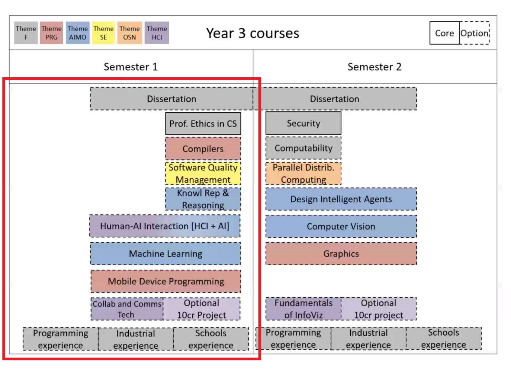
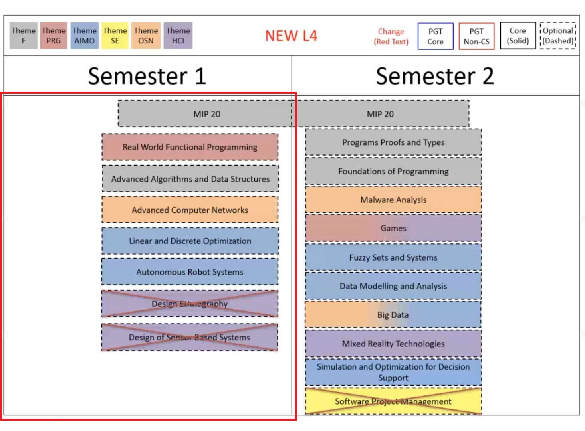

Introduction
Semester 1
Level 3
Prof. Ethics in CS
Machine Learning
Compiler
Mobile Device PRG
Level 4
DS & AA
Auto Robot Sys
Semester 2
Level 3
Computer Security
Computer Vision
Computer Graphics
Design Intel Agents
Computability
Level 4
Malware Analysis
Big Data
Games
本书使用 GitBook 发布
Semester 1
Autumn semester (Semester 1)
Level 3 - Overview

Level 4 - Overview

Red crossed courses are
removed
results matching "
"
No results matching "
"